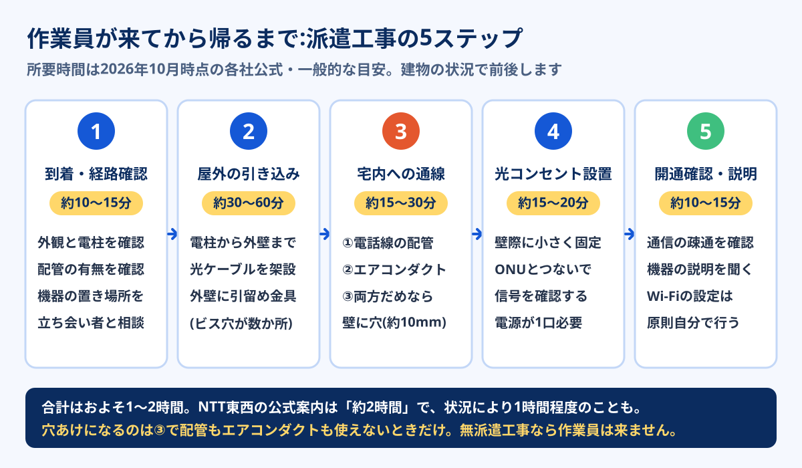

NTT東日本・西日本のフレッツ光の公式案内では、作業員が家に来る「派遣工事」の所要時間はおよそ2時間、壁に穴を開ける場合の穴の大きさは約10mmと書かれています。単3電池の直径(約14mm)より小さい穴です。そして穴あけは最初の選択肢ではなく、電話線の配管とエアコンのダクト穴がどちらも使えなかったときの最後の手段です。
それでも「工事」という言葉からは、半日がかりで壁を削るような作業を想像しがちです。この記事では、作業員が玄関に来てから帰るまでに実際に何が行われるのかを5つのステップに分け、各ステップで立ち会い者が何を決めるのか、そして穴あけに進むかどうかがどの時点で決まるのかを、NTT東西・NURO光・ソフトバンクなど各社公式の情報をもとに整理しました。賃貸で大家さんに何を聞けばいいかの話は賃貸で光回線を勝手に契約していいかに分けてあり、ここでは「当日の中身」に絞ります。
光回線の工事は①到着・経路確認 ②屋外の引き込み(電柱→外壁) ③宅内への通線 ④光コンセント設置とONU接続 ⑤開通確認の5ステップで、合計1〜2時間が目安です。宅内への通線は電話線の配管→エアコンダクト→壁の穴あけの順に検討されるため、配管かダクトが使える家なら穴あけなしで終わるケースが多数派です。部屋にすでに光コンセントがあるか、今のフレッツ系回線からの転用・事業者変更なら作業員が来ない「無派遣工事」になり、立ち会いも不要です。
スマホはどれ?GMOとくとくBB光の料金を見る公式サイトへ →PR・申し込み前にキャッシュバックの受け取り条件を確認できます


工事は「派遣」と「無派遣」の2種類
最初に押さえておきたいのは、「光回線の工事」には作業員が来るものと来ないものがあるという点です。NTT東西はこれを「派遣工事」「無派遣工事」と呼び分けています。どちらになるかは申し込み後の設備確認で決まり、当日の中身も立ち会いの要否もまったく変わります。
| 無派遣工事 | 派遣工事 | |
|---|---|---|
| なる条件 | 住宅内に光ファイバーが引き込まれ、かつ光コンセントが設置済み/フレッツ系からの転用・事業者変更 | 光ファイバーが住宅内に引き込まれていない、または光コンセントがない |
| 作業員の訪問 | なし(局舎内の切り替えのみ) | あり |
| 立ち会い | 不要 | 必要(本人または代理の人) |
| 自分でやること | 届いた機器を光コンセントにつなぎ、設定する | 当日の立ち会いと、工事後のルーター・Wi-Fi設定 |
| 所要時間の目安 | 接続作業は数十分程度 | 約1〜2時間(公式案内は約2時間) |
| 穴あけの可能性 | なし | あり(配管・ダクトが使えない場合) |
※ 2026年10月時点、NTT東日本・西日本のフレッツ光公式ページの記載をもとに作成。光コラボ(GMOとくとくBB光・ドコモ光・ソフトバンク光など)はフレッツ光の設備を使うため、同じ区分で工事が行われます。
見分け方は単純で、部屋の壁に「光」と書かれた差込口(光コンセント)があるかどうかです。前の入居者が光回線を使っていた部屋や、築浅のマンションでは最初から付いていることがよくあります。ただし差込口だけが残っていて、その先の配線が撤去されている場合もあるため、最終判断は申し込み後の設備調査になります。工事の有無で開通までの日数がどれだけ変わるかは光回線の工事待ちは何週間?で詳しく扱っています。
当日の流れ:作業員が来てから帰るまで
ここからは派遣工事の話です。当日の作業は大きく5つのステップに分かれます。各社の工程表の呼び方は少しずつ違いますが、物理的にやることは共通しています。

- ステップ1(約10〜15分) 到着・経路の確認と、機器の置き場所の相談 作業員が建物の外観、最寄りの電柱の位置、電話線の引き込み口を確認します。同時に室内のどこに光コンセントとONU(光回線の終端装置)を置くかを立ち会い者と相談します。ここで決めた場所が、その後の配線ルートと穴あけの要否を左右します。NURO光の公式FAQでも、立ち会いは「設置場所を決定できる方」とされています。
- ステップ2(約30〜60分) 屋外の引き込み:電柱から外壁まで光ケーブルを張る 電柱の光ファイバーから自宅用のケーブルを分岐させ、外壁まで架設します。ケーブルの重みを支えるため、外壁に「引留め金具」をビスで固定することがあり、この際に小さなビス穴が数か所開きます。戸建てで作業時間がいちばん長くなりやすいのがこの工程で、電柱から建物が遠い、道路をまたぐ、といった条件で時間が延びます。
- ステップ3(約15〜30分) 宅内への通線:穴あけかどうかはここで決まる 外壁まで来たケーブルを室内に通します。検討の順番は①電話線の配管 ②エアコンのダクト穴 ③壁の新規穴あけです。配管に空きがあればそこに光ケーブルを通し、配管が詰まっている・曲がっていて通らない場合はエアコンダクトの隙間を使います。どちらも使えないときに限り、壁に直径約10mmの穴を開けます。
- ステップ4(約15〜20分) 光コンセントの設置とONUの接続 室内に引き込んだケーブルの端に光コンセント(光ローゼット)を取り付け、ONUとつなぎます。光コンセントは壁にビスで固定するのが一般的です。ONUには電源が必要なので、設置場所の近くに空いたコンセントが1口要ります。
- ステップ5(約10〜15分) 開通確認と説明 ONUのランプや測定器で光信号が届いていることを確認し、機器の説明を受けて終了です。NTT東日本の案内では、ONU以降のルーター・パソコンの接続と設定は「お客さまが実施」する区分になっています。作業員が帰った時点ではWi-Fiはまだ使えないことが多いと思っておくと慌てません。ルーターの選び方は光回線のルーターの選び方にまとめています。
- 光コンセントとONUを置く部屋・壁(テレビ台の裏か、書斎か)
- 配管もダクトも使えなかったときに穴あけを許可するか(賃貸なら事前に管理会社の判断をもらっておく)
- 室内の配線をどこに這わせるか(モールで隠すか、家具の裏を通すか)
それ以外の作業は作業員が進めるので、ずっと横で見ている必要はありません。ただし判断を求められたときにすぐ答えられるよう、在宅はしておきます。
建物タイプ別:何をするかの違い
上の5ステップは「電柱から直接引き込む戸建て」の場合です。マンションは建物の共用部までは光ファイバーが来ていることが多く、作業の中心は室内側に移ります。建物の配線方式によって、当日の作業はかなり違います。
| 建物タイプ | 当日やること | 時間の目安 | 穴あけの可能性 |
|---|---|---|---|
| 戸建て | 電柱からの引き込み・外壁の金具固定・宅内通線・光コンセント設置 | 約1〜2時間 | 配管・ダクトが使えない場合のみ |
| マンション(光配線方式) | 共用部の設備から各戸の配管を通して室内に光ファイバーを通し、光コンセントを設置 | 約1時間前後 | 低い(共用の配管を使う) |
| マンション(VDSL方式) | 共用部までが光、室内は既存の電話線。電話のモジュラージャックにVDSLモデムをつなぐ | 訪問なしのことが多い | なし |
| マンション(LAN方式) | 各戸のLANコンセントにルーターやPCをつなぐだけ | 訪問なしのことが多い | なし |
| NURO光(戸建て等) | 宅内工事と屋外工事を別の日に2回行う(工法により1回で完了する場合あり) | 各1〜2時間程度 | 壁面固定のため小さなビス穴あり |
※ 2026年10月時点の各社公式情報と一般的な傾向をもとにした目安。auひかりは戸建て1〜2時間、マンション1時間前後が目安とされ、VDSL方式の建物では立ち会い不要になる場合があります。
注意したいのは、NURO光は独自回線のため工事が2回になる点です。立ち会いも2回必要で、公式FAQでは宅内工事・屋外工事ともに立ち会いが必要とされています(本人と電話がつながれば家族や友人でも可)。平日に休みを取りにくい人は、その分の調整コストも比較に含めておくのが現実的です。マンションの配線方式の見分け方はマンションのVDSL方式とはで詳しく説明しています。
穴あけが要る条件・要らない条件
ここが検索している人のいちばんの関心だと思います。結論から言うと、穴あけになるかどうかは「室内まで光ケーブルを通せる既存の道があるか」だけで決まります。建物の構造や築年数は、その道があるかどうかに影響する間接的な要素にすぎません。
| 状況 | 通線ルート | 壁の穴あけ | 残る跡 |
|---|---|---|---|
| 光コンセントが既にある | 既設の配線をそのまま使う | 不要 | なし |
| 電話線の配管に空きがある | 電話線と同じ配管に光ケーブルを通す | 不要 | 光コンセントのビス穴程度 |
| 配管は詰まっているがエアコンダクトがある | エアコン配管の貫通穴の隙間から通す | 不要 | ダクト周りのパテの補修程度 |
| 配管もダクトも使えない | 外壁から室内まで新たに穴を開ける | 必要(直径約10mm) | ケーブル貫通穴+光コンセントのビス穴 |
「配管が使えない」理由として、ソフトバンクの公式解説は配管に空きスペースがない・さびや土で詰まっている・配管が曲がって取り付けられているの3つを挙げています。つまり電話線の配管が「ある」だけでは足りず、中を通せるかどうかは作業員が実際に通線ワイヤーを入れてみて初めてわかります。
もうひとつ見落とされやすいのが、屋外の引留め金具のビス穴です。これは室内に通すための穴とは別物で、電柱から張ったケーブルを外壁で支えるために付けるもの。配管経由で引き込めた場合でも発生することがあります。「穴あけなし」と聞いていたのに外壁にビス穴があった、という食い違いは、たいていこの金具のことです。賃貸で許可を取るときは、室内の穴と外壁のビス止めの両方を含めて話しておくと後で揉めません(許可の取り方と伝え方のテンプレは賃貸で光回線を勝手に契約していいかにまとめています)。
配管を通せるかは当日の作業で初めて判明することがあります。「配管があるから大丈夫」と思っていても、中で詰まっていれば穴あけの判断を求められます。その場で決められない状態で当日を迎えると、工事が中止・延期になり、開通がさらに数週間遅れることもあります。賃貸なら「穴あけが必要になった場合の可否」まで事前に管理会社へ確認しておくのが安全です。
穴あけを避けるための事前チェック
ここからは、競合の解説記事であまり触れられていない部分です。穴あけになるかどうかは当日まで確定しませんが、自分で事前に確認しておくと、穴あけを避けられる確率を上げられるポイントがあります。工事の前の週末に10分あればできる内容です。
- 部屋の壁に「光」表記の差込口がないか:あれば無派遣工事の可能性。申し込み時に伝えると判定が早くなります
- 電話のモジュラージャック(電話線の差込口)がどの部屋にあるか:そこが配管の出口。光コンセントの設置場所をこの近くにすると、配管を使える可能性が上がります
- 外壁の電話線の引き込み口の位置:屋外から見て、黒い電話線が建物に入っている場所を確認。その裏側の部屋が通線しやすい候補です
- エアコンの配管穴の隙間:室内側のカバーを外さずに、パテの状態や配管の本数を見ておく。配管が太く隙間がない場合はダクト経由は難しくなります
- ONUとルーターを置く場所に電源が1口あるか:ない場所を指定すると延長コードが前提になり、設置場所の変更につながりやすい
- 設置希望の部屋を2候補用意する:第1候補で配管が通らなくても、第2候補の部屋なら通るケースがあります
ポイントは、「どこにルーターを置きたいか」より「どこなら既存の道が使えるか」を優先することです。リビングの真ん中に置きたい気持ちはわかりますが、電話線の出口と離れた場所を指定するほど、室内の配線距離も穴あけの可能性も上がります。光コンセントは電話線の出口の近くに付けてもらい、そこから先はWi-Fiで届かせる、あるいは中継機やメッシュWi-Fiで補う方が、壁を傷つけずに済みます。家の中の電波の届け方はメッシュWi-Fiと中継機の選び方が参考になります。
立ち会いの前日までに準備すること
当日の作業をスムーズに終わらせるために、前日までにやっておきたいことを順番に並べました。準備不足で作業が止まると、延期になって開通がさらに先になることがあります。
-
工事日時と訪問時間帯の連絡手段を確認する
工事日は申し込み後に事業者から連絡が来ます。当日の訪問時間は「午前」「午後」など幅のある枠で指定されることが多く、到着前に作業員から電話が入るのが一般的です。知らない番号からの着信に出られるようにしておきます。
-
賃貸なら、管理会社の許可範囲をメモしておく
「配管経由ならOK」「外壁のビス止めはOK」「新規の穴あけはNG」など、許可の範囲を具体的にメモして当日作業員に伝えます。口頭の記憶だとその場で迷います。
-
電話線の差込口・エアコン周り・設置場所の前を片付ける
作業員が壁や配管口に触れられるよう、家具や荷物をどけておきます。重い家具の裏に電話線の差込口がある場合は、事前に動かしておくと作業時間が短くなります。
-
外回りの動線を確保する
戸建てでは、外壁の引き込み口まで作業員が近づけるか確認します。はしごを立てる場所に物が置いてあると作業が止まります。駐車スペースがあるなら、作業車を停められるかも確認しておきます。
-
立ち会える人を決める
基本は契約者本人ですが、代理の人でも可能な事業者が多くなっています。代理の場合は、設置場所と穴あけの可否を判断できる人にするか、当日すぐ本人に電話がつながるようにしておきます。
-
ルーターと設定情報を手元に用意する
工事完了後にすぐ使いたいなら、Wi-Fiルーターとプロバイダから届いた接続情報の書類を用意しておきます。IPv6(IPoE)対応のルーターでないと速度が出にくい場合があるため、手持ちのルーターが古いならIPv6 IPoEとはで対応状況を確認しておくと安心です。
工事費と、当日に追加料金が出るケース
工事の中身がわかったところで、費用の話も押さえておきます。光コラボの工事費は、多くの窓口で戸建て約22,000円・マンション約16,500円前後が目安です。無派遣工事なら数千円程度で済むことが多くなります。
| 項目 | 金額の目安(税込) | 補足 |
|---|---|---|
| 派遣工事(戸建て) | 約22,000円前後 | 「実質無料」は分割払いを毎月の割引で相殺する仕組み |
| 派遣工事(マンション) | 約16,500円前後 | 同上 |
| 無派遣工事 | 数千円程度 | 機器の接続は自分で行う |
| 土日祝の工事加算 | 3,300円(フレッツ光の場合) | 光コラボは各社の規定を確認。年末年始は別料金 |
| 穴あけの追加費用 | かからないことが多い | 特殊な工法が必要な場合は事前に案内される |
※ 2026年10月時点の目安。事業者・窓口・工事内容によって異なるため、申し込み前に公式の料金表で確認してください。
見落としやすいのが土日祝の工事加算です。フレッツ光の公式FAQでは、土日・休日の工事には3,300円の加算額がかかると案内されています(宅内の配線を再利用し自分で機器を設置する工事は除く)。平日に休めるなら平日の方が安く、しかも土日枠より空きやすい傾向があります。「工事費実質無料」の仕組みと、途中解約で残債が出る計算は光回線の初期費用と工事費で詳しく解説しています。
穴あけも工事もできないときの選択肢
管理会社から穴あけも外壁のビス止めもNGと言われた、そもそも建物に光回線の設備がない、という場合もあります。このときの選択肢は大きく2つです。
- 建物に導入済みの回線を探す:マンションで特定の事業者だけが設備を入れているケースがあります。管理会社に「導入済みのインターネット回線はあるか」を聞くと、工事なしで使える回線が見つかることがあります。探し方は賃貸で光回線の工事ができないときで解説しています。
- 工事不要のホームルーターにする:コンセントに挿すだけなので建物への加工がゼロ。退去時も持って出るだけです。対戦ゲームや大容量の通信が多い人には向かない面もあるので、ホームルーターが向かない人の条件を先に確認してください。
ホームルーターは工事も配線の加工もないため、穴あけの心配がありません。ソフトバンク・ワイモバイルのスマホならセット割の対象にもなります。契約前に、住所と階数でエリア判定を見ておくと失敗が減ります。
ソフトバンクエアーのキャンペーンを見る割引後の月額とセット割の条件はこちら※ 電波状況は建物の階数・窓の向きで大きく変わります。申込前にエリア判定を確認し、届いたら窓際で実測してください。3社の比較はホームルーター3社比較にまとめています。
よくある質問
光回線の工事は何時間かかりますか?
工事の立ち会いは本人でないとだめですか?
穴あけを断ったら工事はどうなりますか?
開けた穴は退去時にどうなりますか?
工事の日に雨が降ったら中止になりますか?
まとめ:穴あけは「最後の手段」。先に通り道を見ておく
- 工事は派遣工事と無派遣工事の2種類。光コンセントがある部屋や転用・事業者変更なら作業員は来ない
- 派遣工事は到着・引き込み・通線・光コンセント設置・開通確認の5ステップで約1〜2時間
- 宅内への通線は電話線の配管→エアコンダクト→穴あけの順。穴は直径約10mm
- 外壁の引留め金具のビス穴は通線の穴とは別物。賃貸では両方含めて許可を取る
- 電話線の出口の近くを設置場所に選び、第2候補の部屋も用意しておくと穴あけを避けやすい
工事の中身がわかったら、次は回線そのものの選び方です。スマホのキャリア別のおすすめは光回線7社比較に、工事なしで乗り換えたいなら事業者変更の手順にまとめています。
- NTT東日本「フレッツ光 開通工事の流れ(戸建て向け)」(2026年10月確認)
- NTT西日本「光回線の工事内容を分かりやすく解説!」フレッツ光公式(2026年10月確認)
- NTT東日本 フレッツ光 よくあるご質問「土日や休日にも工事はできますか?」(2026年10月確認)
- NURO光 よくあるご質問「開通工事の具体的な作業内容が知りたい」(2026年10月確認)
- ソフトバンク「光回線の工事は穴あけをする?必要になるケースや注意点などを紹介」(2026年10月確認)